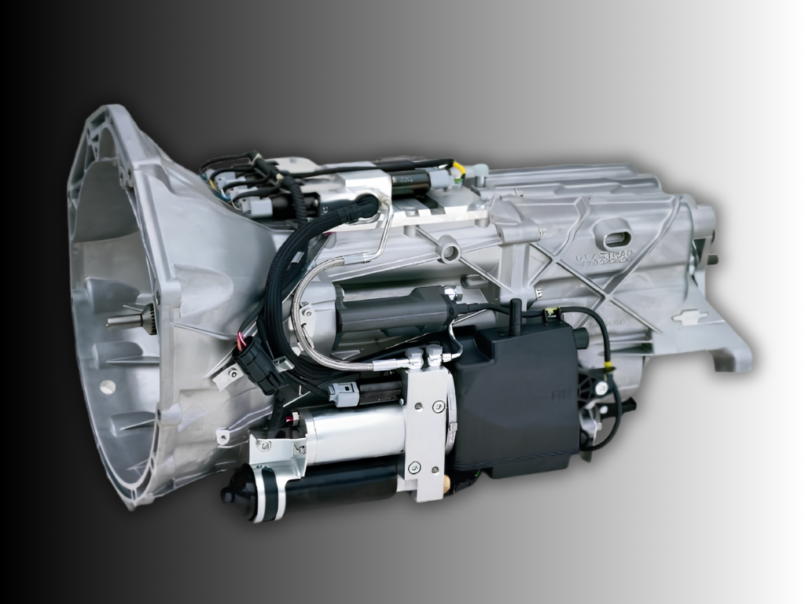

What is SMG?
Traditionally, automatic transmissions had always been known as slush boxes because of their torque converter. Some manufacturers, such as Mercedes, chose to replace the torque converter itself with a wet clutch while keeping the rest of the automatic largely intact. BMW took a different path entirely.
In 1996, BMW coined the concept of the Sequential Manual Gearbox — better known as the SMG. The first iteration, SMG I, was developed jointly by BMW, Getrag, and Sachs, drawing on the technology BMW used in its Williams Formula One cars of the era.
The idea was elegantly simple — so simple that manufacturers kept using variations of it to build cheap automatics well into the 2020s. Take a regular manual gearbox and bolt on solenoids and hydraulic actuators to do the work a driver's hands and left foot normally would: selecting gears and operating the clutch. Everything a human does in a manual car is handed over to actuators and orchestrated by a computer, promising shifts that are uniform, precise, and — most importantly — fast.
SMG I made its series-production debut in the E36 M3, one of the first road cars to carry a sequential gearbox previously reserved for motorsport. It was, however, a rough first attempt: relatively fragile and unreliable in service, with owners often reporting costly repairs.
The SMG truly became famous — or infamous — in its second iteration, SMG II, which debuted in the 2001 E46 M3 alongside its legendary S54 straight-six. It stayed in production until the end of the E46 M3, after which BMW replaced it with a far more sophisticated dual-clutch transmission from the E90/E92 M3 onwards. The E46 M3 CSL, notably, reportedly ran a different, improved version of the SMG II software compared to the standard car.
A third and final version, SMG III, followed in the E60 M5 and E63/E64 M6, remaining in service until those cars ended production in 2010. These cars were built around their own piece of motorsport heritage — the F1-derived S85 V10 — and here too the SMG drew criticism for marring yet another extraordinary engine. Only in the US could buyers sidestep it: the manual version of the M5 and M6 was offered exclusively in the American market.

What was SMG made of?
At its core, the SMG is nothing more exotic than a manual transmission with the clutch pedal removed and replaced by hydraulic actuation. Gear changes are carried out by electric and hydraulic actuation of both the gearbox's internal selector forks and a conventional single-disc dry clutch — not by a driver-operated pedal. Unlike the go-to automatic of the time — the torque-converter automatic, which at best merely lets you shift manually (think Porsche and Audi's Tiptronic, or BMW's own Steptronic) — the SMG dispenses with the torque converter entirely, keeping the whole unit lighter and retaining a true mechanical clutch and manual gearset inside. The computer simply handles clutch actuation and gear selection electronically in response to driver input.
The SMG II, built on the Getrag S6S420G manual gearbox, brought this together with a dedicated set of hardware:
| Component | Role |
|---|---|
| SMG control unit (Siemens) | Gathers sensor data (engine speed, throttle position, brake input, steering angle, wheel speed, temperatures, and more) and drives the clutch solenoid valve along with the upshift and downshift actuators |
| DME | The brain that decides exactly when to shift |
| SMG CAN bus | The line between the DME and the SMG control unit: sensor data flows from the SMG unit to the DME, shift decisions flow back from the DME to the SMG unit, and the DME then bridges it all onto the rest of the car's network |
| Hydraulic unit | Supplies and directs hydraulic pressure for clutch and gear actuation |
| Gearbox actuators / shifting cylinders | Physically moves the internal selector forks |
| Clutch slave cylinder | Fitted with a contactless linear displacement sensor to physically actuate the clutch |
| Clutch solenoid valve | Actuates and controls the clutch slave cylinder |
| Shift lever module | Driver input for gear selection, with shift lock |
| Steering wheel paddle switches | Driver input for sequential up/down shifts |
| DRIVELOGIC control system | Governs shift behaviour and aggressiveness |
A useful way to picture the division of labour: the SMG control unit sits next to the DME and does the physical work — hydraulic control and sensor gathering — while the DME does the thinking, computing the actual shift commands.
The DRIVELOGIC feature was introduced with the SMG and has survived, in spirit, all the way into today's M cars. It offers six selectable settings that govern the transmission's entire personality. At the lower settings, the gearbox pulls away in a taller gear (second instead of first), shifts earlier (around 2,500 rpm), and reaches top gear sooner to favour efficiency, with gentle, unhurried shifts. At the higher settings, it holds each gear longer, lets the revs climb further before changing (shift points moving up toward 3,500 rpm and beyond under hard acceleration), favours lower gears for a sharper, on-your-toes response, and cracks off both upshifts and downshifts far more aggressively.
In manual mode, the highest DRIVELOGIC setting — which stays locked until you switch off the stability control — lets the gearbox fire shifts as quickly as 80 milliseconds, sending noticeably sharp jolts through the drivetrain under hard acceleration.
Downshifts have their own story. On earlier cars, the driver had to blip the throttle themselves on the way down — just as you would in a manual — to bring engine and wheel speed into harmony and avoid a violent lurch. A later update added automated rev-matching via double-declutching: the electro-hydraulic system blips the throttle on your behalf to synchronise engine speed with the transmission's input speed, and it does so faster and far more consistently than any human could manage.
The system also builds in a few safety nets. If the car slows to a stop and you forget to shift down, it automatically drops to first or second for you. It won't allow an upshift-less pull to over-rev and damage the engine — though, tellingly, it also won't upshift on your behalf if you simply forget to, keeping you honest and involved.

Explore the gearbox
Hover or tap a marker to see what each part does.
Tap a numbered marker · use Tab and Enter to step through them.
Inside the gearbox
In manual mode, at the top DRIVELOGIC setting — locked until stability control is switched off.
When and where was SMG used?
| Chassis / model | Engine | Transmission | Denomination | Introduced |
|---|---|---|---|---|
| E36 M3 | S50B32 | SMG I (not offered in the US) | GS6S420BG | 10/1996 |
| E46 M3 | S54B32O0 | SMG II | GS6S420BG | 03/2001 · 06/2003 |
| E46 3 Series | — | 5-Speed SMG | GS5S31BZ | ca. 2002 |
| E85 Z4 | M54B25 / M54B30 | 6-Speed SMG | GS6S37BZ | 04/2003 |
| E60/E61 525i & 530i | M54B25 / M54B30, N52B30O0 | 6-Speed SMG | GS6S37BZ | 09/2003 |
| E60/E61 545i & 550i, E63/E64 645Ci & 650i | N62B44O0, N62B48O1 | 6-Speed SMG | GS6S53BZ | 09/2003 |
| E60 M5, E63/E64 M6 | S85B50O0 | SMG III | GS7S47BG | 09/2005 |
| E89 Z4 (non-M) | N54B30O0 | Double-clutch transmission (DCT) — SMG's successor | GS7D36SG | 05/2009 |
Alongside the M-car units, BMW also fitted a non-M sequential manual across its regular range: a five-speed built on a ZF gearbox with Magneti Marelli hardware (sold elsewhere as "Selespeed" across various Alfa Romeo, Fiat, Ferrari, and Maserati models), and the six-speed GS6S37BZ/GS6S53BZ, which found its way into the E85 Z4, E60/E61 5-series, and E63/E64 6-series before BMW moved on to dual-clutch technology towards the end of that decade.
Why are most people scared of it?
The SMG leans entirely on a hydraulic pressure system to actuate its gear changes, and that system is its best-known weak point. Owners have consistently reported the unit struggling to hold hydraulic pressure over time, and putting it right usually means a rebuild — new seals, a new accumulator, and often the SMG pump/motor itself.
Running costs and repair bills are a genuine, ongoing consideration with these cars. In fact, the SMG is routinely flagged — right alongside the VANOS system and the rear subframe — as one of the three areas any prospective E46 M3 buyer should have inspected before handing over money. The earliest SMG I units carry an extra asterisk here, given their reputation for fragility and the scarcity of parts and support today. SMG III units, however, are touted to be considerably more reliable.
SMG joins the list of things that can go terribly wrong on the BMWs of the 2000s — right alongside the well-known VANOS and subframe rust issues.
The bittersweet experience of owning an SMG
If you're even slightly plugged into the world of BMW — and M3s and M5s in particular — you'll know the SMG tends to get put in a bad light. And, honestly, not without reason. But there's a whole camp of owners who've learned to enjoy it, and once you're in that camp, the gearbox stops feeling terrifying and alien.
Ever since the early press coverage in the 2000s, reactions have been a mixed bag. This was first-of-its-kind technology in a production car, so it's fair to say it didn't arrive as a fully polished product. The shifting was often described as clunky and hesitant — as though someone with a fresh driver's licence were working the gears, except that someone was the car's own computer.
Steadily, though, owners worked out how to use it properly. Because at heart it's still a manual, you can't treat it like a full-blown automatic. The technique most owners land on is a deliberate lift off the throttle during a shift — exactly what you'd do in a manual car. That brief lift gives the control unit a little breathing room and smooths out the clunky, jerky character. It's easy to do in manual mode, where you're pulling the paddles yourself; in automatic mode, you have to anticipate when the car is about to change gear, ease off, and get back on the throttle as the clutch re-engages.
That said, not everyone agrees the lift-off is necessary — some argue it can even confuse the shift logic. That's because, like many automatics, the SMG adapts to its driver over time. The computer is constantly learning how you drive and tailoring its shift strategy to suit you. Which is exactly why the car can feel so alien when someone else gets behind the wheel: they can't predict the shifts, and the box no longer seems to be following anyone's inputs cleanly. A well-known fix is to flash and reset the DME software, wiping the old adaptations so the gearbox can quickly relearn a new owner's style.
Between the lift-off technique and the adaptation reset, one thing becomes clear: this was never going to be a gearbox you could simply jump into and treat like a perfect automatic. And maybe that's the real point of the SMG. It asks you to meet it halfway, to go through a short learning curve before it gives its best. For a lot of us, that's not a flaw to apologise for. It's exactly why the imperfect, characterful gearboxes of that era are worth loving.
This was never going to be a gearbox you could simply jump into and treat like a perfect automatic.
Sources
- BimmerScan — "BMW E46 SMG"bimmerscan.com/bmw-e46-smg
- FCP Euro — "Rediscovering The BMW SMG Transmission: A Hidden Gem Or Obsolete Relic?"fcpeuro.com — rediscovering the BMW SMG transmission
- Greg Wilson, "Looking back to 2002 with BMW's SMG – Sequential Manual Gearbox," originally published on canadiandriver.comeng.kaps.cz — BMW SMG gearbox, reproduced
- Reddit, r/BMW — "SMG E46 M3 owners what's your opinion on the transmission?"reddit.com/r/BMW — SMG E46 M3 owner opinions
- SMG Society — Model Overview pagessmgsociety.com
- BMW Doctor - Is The **BMW SMG Transmission** The WORST TRANSMISSION Ever Made ??youtu.be/2eSPqMh2Vaw
- M3nameisjosh - The E46 M3 SMG Transmission isn't THAT bad!youtu.be/TJfmk7tNZ8o
- MTechGuyyoutube.com/@MTechGuy
- M5Board — BMW M5 Forumm5board.com
- BMW New Zealandbmw.co.nz
- BMW Group PressClub Chinapress.bmwgroup.com/china
- Refined Performance - BMW E60 M5 Carbon Fiber Shifter Console Wrap DIY...kindayoutu.be/StuaGGqUEUg